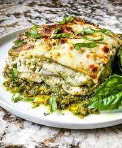

Describing:
Lasagna al Pesto (Pesto Lasagna) is a cheesy homemade Italian lasagna
recipe. Made with three cheeses, pasta, and a creamy bechamel basil
pesto sauce. A comfort food perfect for cold weather and winter.
Vegetarian.
Ingrediences:
- 3 Tablespoons unsalted butter
- 3 Tablespoons flour
- 3 cups whole milk
- ½ teaspoon salt
- ¼ teaspoon black pepper
- 1 ½ cups basil pesto
Instructions:
- Prepare the Noodles
- Make the Pesto Béchamel Sauce
- Prepare Cheese Mixture
Cook the noodles in a large pot of water as per package direction.
When al dente (still firm but not crunchy and not too soft), drain
and toss with a little olive oil to help prevent sticking. Set aside.